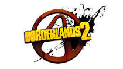
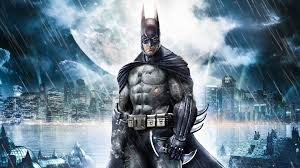
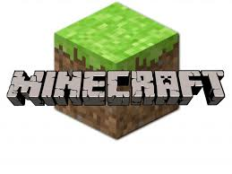

Video Games
This page contains information regarding my top 3 favorite video games and why I think they're awesome.
Borderlands 2
Borderlands 2 is about this group of mercenaries known as "Vault Hunters". "Handsome" Jack, leader of the Hyperian Corporation, is also after the legendary vault that is rumored to hold great riches. And he will do anything to prevent you from getting there first. I think this game is awesome for multiple reasons.
- It is open world. There are so many places you can explore, you might forget about your main goal.
- Four unique character classes. Each character has a unique skill that could help turn the tide of battle. Axton can throw out an attack turret to help out. Maya can heal teammates and temporary immobilize enemies. Salvador can fire two guns simultaneously. And Zer0 can turn invisable and throw out a decoy. My favorite is Axton.
- Lots of guns to choose from. You could spend ten hours on the game and never get the same gun twice.
- The story is interesting and funny.
Batman: Arkham Asylum
With how awesome Batman is, I doubt his game needs an introduction. But I'm giving one anyway. Batman: Arkham Asylum starts off with the player (Batman) escorting the infamous Joker to his cell at the Asylum. The Joker escapes and takes control of the entire facility. You must then track down all of the most dangerous inmates in Arkham and return them to there cells while trying to locate The Joker. I always enjoy superhero games. Here are some key points that I like about this one.
- Like Borderlands, it is open world. Lots of secrets for you to find. Some so hidden you'll need a walkthrough.
- The Scarecrow. Even though this game is about Batman, there is one character that I wish appeared more. The Scarecrow, as the name implies, scares people using a special type of fear toxin. Him combined with an insane asylum, sets a creepy mood for the game.
- It is Batman. Who doesn't like Batman?
Minecraft
Minecraft is a simplistic game about building and survival. Even though there is a final boss, there is no real "ending". The main goal is simply survive in this world of monsters. You start off in the wilderness with nothing but your bare hands. And you must create shelter before sunset, because monsters are more active at night. Though it doesn't look like much, I have played it for hours.
- It isn't just open world, it's endless. You can walk in a straight line and it will just create a new randomly generated section of the world.
- It is survival. I really like survival based gameplay. No specific reason.
- It has simplistic graphics. While most games focus on a realistic looking game, Minecraft has blocking textures. I personally think that looks better.